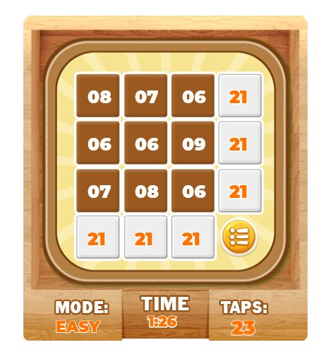
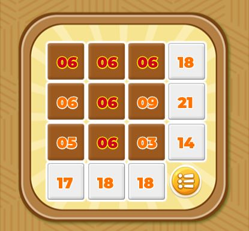
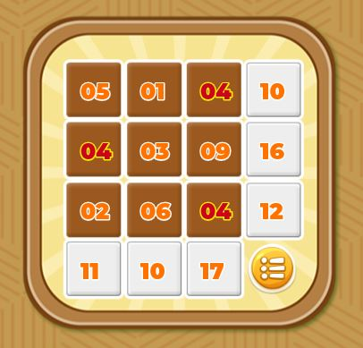

Earn 100 score points by tapping any point on your screen when the moving virus appears perfectly inside the white virus frame at the center of the screen. The star box at the top left of the screen indicates your score as you play while the diamond box at the top right indicates the number of tap trials you have left or used depending on the game mode.
There are four modes available which are 30 trials, 50 trials, 100 trials and Countdown Mode with each of the modes having two diffculties (Easy and Hard). When you select Easy difficulty, the speed of the moving virus is much slower than Hard. The trial modes offers you limited number of taps(trials) before the game ends while in countdown mode, a countdown timer of 15 seconds start at the beginning of the game and you are required to get the virus in the white virus frame accurately to reset the time. The game will stop when you are unable to reset the clock by getting any score point in that interval.
In all modes,you get 100 score points when you stop the moving virus in the white frame at the center of the screen. You get multiple of your score point when you get consecutive points (Combo). E.g if you had three consecutively combo, you get (3x100 = 300) to your scorepoint and 5 Combos (5x100 = 500) to your scorepoint.
Falling Virus is an endless game of falling virus. you are needed to touch all falling virus as they fall to make them disappear. Its an endless mode with levels. The level increases as the virus falls thereby increasing the speed at which they fall. The game ends when any of the virus goes below your screen.
You earn 100 score point for every virus you touch, touch as many virus to earn more points, its an endless game and it can only stop when the speed becomes too fast for you to keep up.
Sum Up Puzzle is an addition game with 3x3, 4x4 and 5x5 tiles system.
The aim of the game is to keep all numbers on the white tiles to the right
and bottom the same by adding all numbers in the brown tiles
in each row and column. Touching the numbers in the brown tiles will increase the number
touched by 1 thereby adding an extra number to the white tile to the right and bottom of that number.
The game will end when all numbers on the white tiles are the same.

There are three mode which are 3x3 tiles, 4x4 tiles and 5x5 tiles each with two diffculties(Easy and Hard).
EASY:
Repetiton of all numbers
in a row and column will not be valid even if all numbers match on the white tiles. This will also lead to the numbers
with such errors displayed in red. This applies to all modes 3x3 tiles, 4x4 tiles and 5x5 tiles.

HARD:
Repetiton of same number across all brown tiles row and column is not allowed, repeating numbers will be
indicated in red. This applies to all modes 3x3 tiles, 4x4 tiles and 5x5 tiles.

A timer is set to display the total time used in completing the puzzle and also the number of times you tapped a number in the brown tiles is recorded. When the game ends, they are displayed at the bottom of the scoreboard including the difficulty for you to screenshot and share.